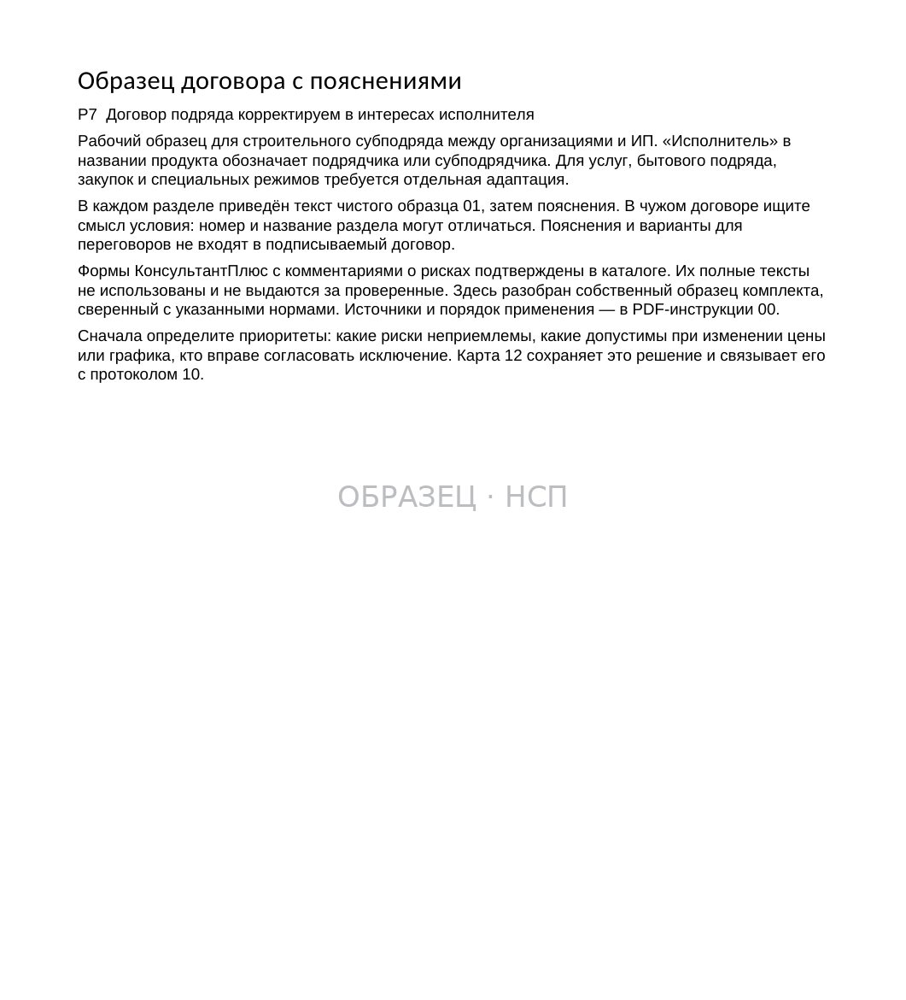
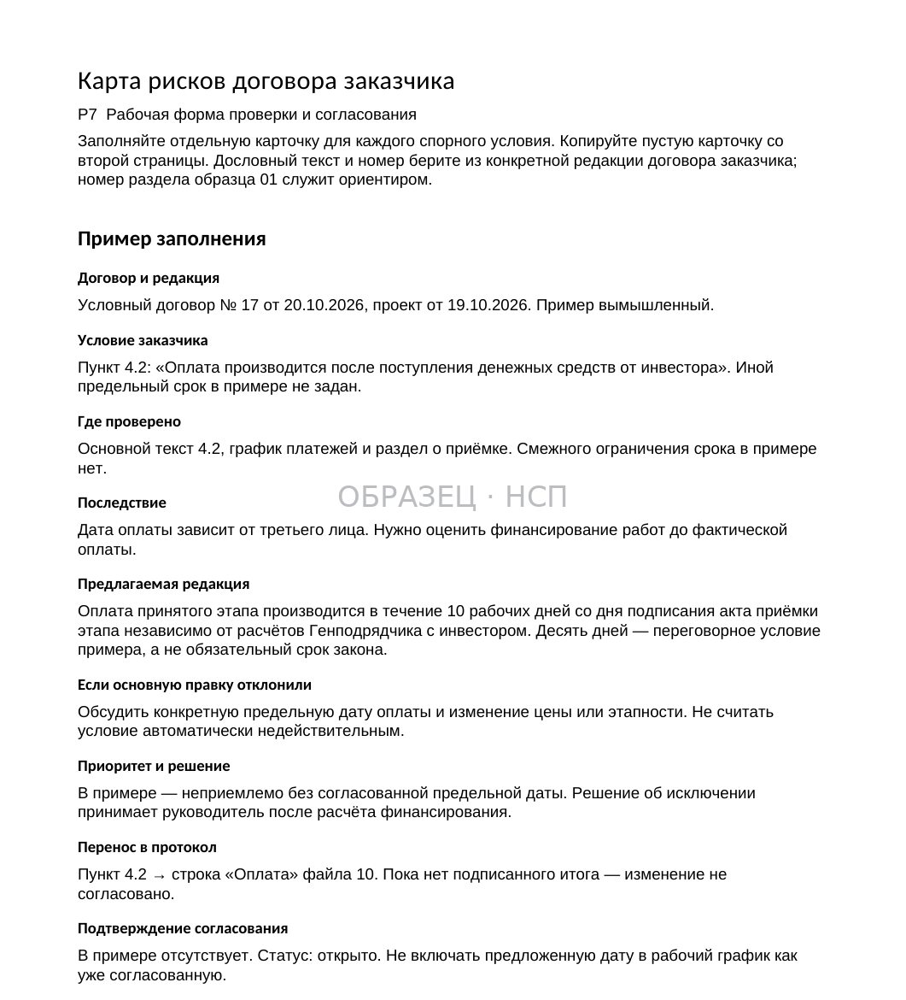
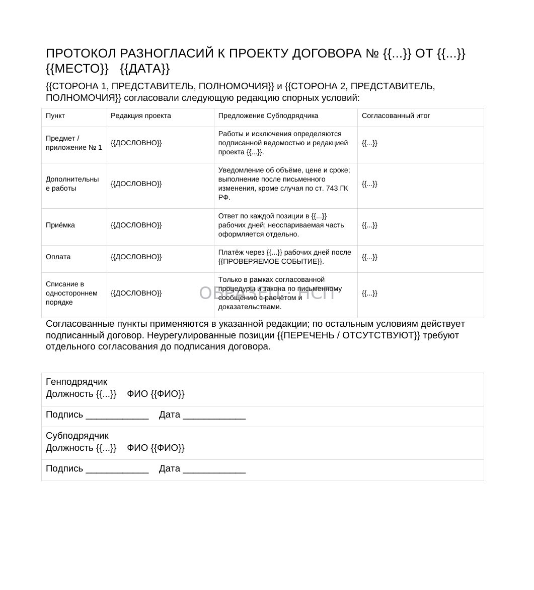
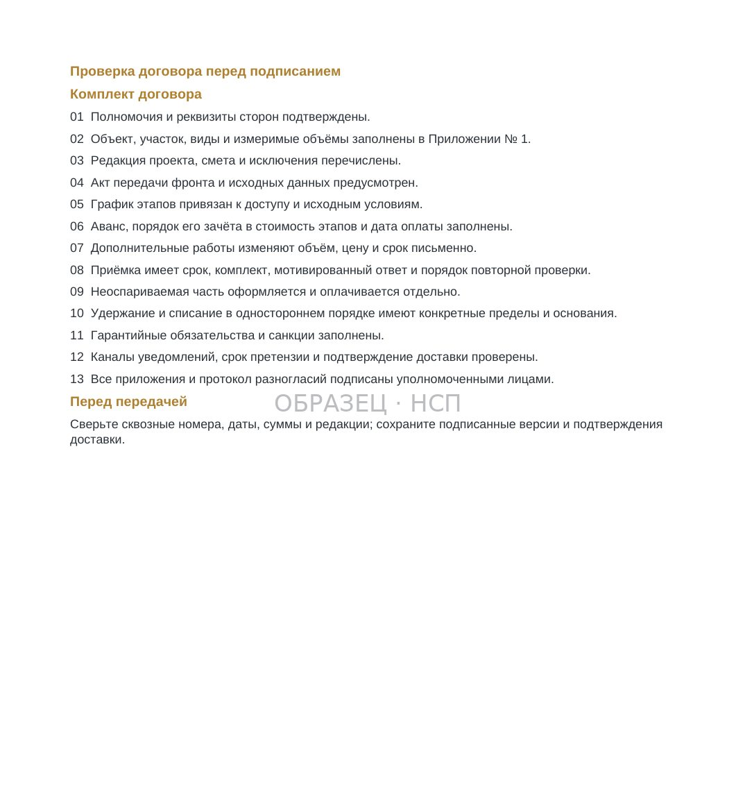

ДОГОВОР / РАЗБОР ПО РАЗДЕЛАМ
Договор субподряда: образец, проверка условий и протокол разногласий
Обновлено 11 ноября 2026
Какие положения проверить до подписания договора строительного субподряда, как определить финансовые и производственные риски и оформить согласованные изменения.
Договор субподряда определяет не только объём работ и их стоимость. В нём устанавливаются обязанности по передаче строительной площадки и проектной документации, порядок изменения объёмов, сроки приёмки, условия оплаты, ответственность сторон и действия при прекращении работ.
Для подрядчика основная задача перед подписанием — установить, может ли он выполнить предусмотренные договором обязательства в согласованных условиях и каким образом получит оплату за фактически выполненный результат.
Проверка должна завершаться не перечнем общих замечаний, а конкретными решениями: какие пункты принимаются, какие требуют иной редакции, какие приложения необходимо дополнить и кто уполномочен согласовать изменения.
1. Установите стороны договора и полномочия подписантов
Строительный субподряд предполагает договорные отношения между генеральным подрядчиком и привлечённым им исполнителем. В обычной ситуации именно генподрядчик выступает заказчиком по отношению к субподрядчику.
В соответствии со статьёй 706 ГК РФ генподрядчик несёт ответственность перед субподрядчиком за неисполнение или ненадлежащее исполнение заказчиком обязательств по договору подряда. Прямые требования между субподрядчиком и застройщиком либо техническим заказчиком по общему правилу ограничены, если иное не предусмотрено законом или договором.
Перед подписанием необходимо проверить точное наименование контрагента, ИНН, полномочия представителя, соответствие реквизитов договора и приложений, а также наличие специальных условий о согласовании субподрядчика.
Если в переговорах участвуют представители застройщика, генерального подрядчика и технического заказчика, следует определить, кто вправе давать обязательные указания, подписывать документы и принимать результат работ.
Различие между рабочим указанием инженера на объекте и изменением договорного обязательства должно быть понятно обеим сторонам ещё до начала строительства.
2. Определите предмет, границы и измеримый объём работ
Предмет договора необходимо проверять одновременно с технической документацией, сметой и перечнем работ.

Недостаточно формулировки «выполнить комплекс строительно-монтажных работ по объекту». Она должна быть соотнесена с конкретными разделами проекта, участками, видами работ и измеримыми результатами.
В приложении о составе работ целесообразно определить:
- Наименование и местоположение объекта, этапа или участка.
- Состав работ и единицы измерения, если применимо.
- Номера и редакции проектной и рабочей документации.
- Работы, материалы, механизмы и услуги, включённые в цену.
- Смежные работы, которые выполняют другие организации.
- Границы ответственности при передаче результата следующему подрядчику.
Особого внимания требуют формулировки «все сопутствующие работы», «всё необходимое для сдачи объекта» и «полный комплекс независимо от указания в смете». Такие положения нужно оценивать с учётом предмета договора и технической документации, а не автоматически признавать любую дополнительную операцию оплачиваемой или неоплачиваемой.
Практический результат: после проверки можно сопоставить каждую договорную обязанность с конкретным приложением и определить, как будет подтверждаться её выполнение.
3. Проверьте техническую документацию и порядок её изменения
По статье 743 ГК РФ строительные работы выполняются согласно технической документации, определяющей их содержание и объём, и смете, устанавливающей цену.
Договор должен определять состав и содержание технической документации, а также сторону и сроки её предоставления.
Перед подписанием необходимо установить, какие чертежи реально переданы, по каким редакциям рассчитана цена, кто отвечает за выдачу изменений и в каком порядке подрядчик получает утверждённые документы для производства работ.
Если в договоре указана одна редакция проекта, а фактически на объект передаётся другая, следует оформить расхождение до возникновения спорных затрат.
Отдельно нужно предусмотреть порядок действий при выявлении ошибок проекта, непригодности предоставленных материалов или препятствий, которые делают соблюдение срока либо требований к качеству невозможным.
Статья 716 ГК РФ предусматривает обязанность подрядчика предупредить заказчика о соответствующих обстоятельствах и приостановить работу в предусмотренных ею ситуациях. Игнорирование порядка предупреждения может ухудшить доказательственную позицию подрядчика.
4. Согласуйте передачу фронта работ и условия начала строительства
Начальная дата в календарном плане должна соотноситься с фактической возможностью приступить к работам.
При проверке договора необходимо установить, кто и когда передаёт фронт работ, обеспечивает доступ на объект, предоставляет утверждённую документацию, электроснабжение, места складирования и другие ресурсы, необходимые для выполнения согласованного объёма.
В соответствии со статьями 718 и 747 ГК РФ содержание обязанностей заказчика по содействию и обеспечению условий строительства зависит от применимых норм и условий договора.
Договор желательно дополнить понятным порядком передачи фронта работ с актом либо иным предусмотренным сторонами подтверждением.
Если объект не готов к началу работ, необходимо документировать причины, даты уведомлений и влияние препятствий на график. По статье 719 ГК РФ при наличии установленных оснований подрядчик вправе не приступать к работам либо приостановить их; конкретные действия должны соответствовать обстоятельствам и договору.
Подробнее о передаче площадки — «Акт передачи строительной площадки: что проверить перед подписанием».
5. Проверьте цену, смету и распределение дополнительных затрат
Цена может быть твёрдой или приблизительной, а её определение — непосредственно в договоре либо через согласованную смету. Правила определения и изменения цены содержатся в статье 709 ГК РФ.

При фиксированной цене важно проверить не только итоговую сумму, но и конкретные обязательства, которые она покрывает.
Для субподрядчика существенны расходы на временные сооружения, механизмы, вывоз отходов, транспортировку, разгрузку, охрану, содержание строительной площадки, исполнительную документацию, испытания и работы в стеснённых условиях.
Необходимо установить, какие расходы включены в расценки, какие оплачиваются отдельно и кто предоставляет давальческие материалы.
Пример. Смета предусматривает монтаж конструкций, но договор дополнительно возлагает на подрядчика погрузку, вывоз и утилизацию строительных отходов без отдельной оплаты. До подписания нужно определить, учтена ли эта обязанность в цене, в каком объёме и какими документами будет подтверждаться её исполнение.
Если стороны обсуждают изменение стоимости, следует фиксировать согласованную редакцию сметы, а не только общую договорённость о цене в переписке.
6. Определите порядок согласования дополнительных работ
В процессе строительства возникают изменения проектных решений, дополнительные объёмы и операции, не включённые в первоначальную смету.
Следует заранее установить, кто вправе выдать распоряжение, в какой форме подрядчик уведомляет о необходимости изменения работ, какие документы подтверждают согласование цены и срока и когда можно приступать к выполнению.
В предусмотренных статьёй 743 ГК РФ обстоятельствах подрядчик, выявивший необходимость неучтённых работ и увеличения сметной стоимости, обязан уведомить заказчика. Если ответ не поступает, закон устанавливает порядок дальнейших действий, включая приостановление соответствующих работ, с учётом предусмотренных исключений и согласованного срока ответа.
Устное указание представителя заказчика не следует автоматически считать надлежащим согласованием дополнительной стоимости.
Для документального оформления могут потребоваться уведомление, ведомость объёмов, расчёт цены, изменение графика и дополнительное соглашение либо иной предусмотренный договором документ.
Практический порядок приведён в статье «Дополнительные работы в строительстве: оформление и оплата».
7. Согласуйте реальные сроки и условия их изменения
Статья 708 ГК РФ предусматривает начальный и конечный сроки выполнения работ. Договор также может устанавливать промежуточные сроки этапов.
При проверке календарного плана важно установить зависимость работ от передачи фронта, выдачи документации, смежных подрядчиков, поставок оборудования и технологической последовательности.
Следует проверить, предусмотрен ли порядок изменения сроков при задержке встречных обязательств заказчика, необходимости дополнительных работ или согласованной корректировке проекта.
Особое внимание требуется к условиям, по которым подрядчик отвечает за общий срок строительства независимо от доступности своего участка и действий других организаций.
При согласовании изменений желательно оформлять не только новую конечную дату, но и основания переноса, затронутые этапы и последствия для расчёта неустойки.
8. Определите порядок сдачи работ и состав документов
Приёмка должна иметь понятную последовательность: уведомление о готовности, передача предусмотренных документов, организация осмотра, фиксация замечаний и подписание акта либо мотивированный отказ.
КС-2 и КС-3 используются в случаях, предусмотренных договором и применимыми требованиями. Их наличие само по себе не заменяет проверку того, какой результат или этап стороны считают принятым.
По статье 753 ГК РФ в строительном подряде предусмотрено оформление сдачи и приёмки актом. При отказе одной стороны от подписания возможен односторонний акт, но его правовая оценка зависит, в частности, от обоснованности мотивов отказа. Односторонний акт не гарантирует взыскание оплаты автоматически.
В договоре рекомендуется установить конкретный срок рассмотрения переданных актов и документации, порядок направления замечаний, процедуру повторной передачи и перечень обязательных приложений к соответствующему этапу.
Необходимо различать замечания к фактическому результату работ и недостатки оформления отдельных документов.
Проверку расчётных форм можно сопоставить с материалом «Проверка КС-2 и КС-3 перед сдачей».
9. Установите дату возникновения обязанности оплатить работы
По статье 746 ГК РФ оплата строительных работ производится в размере, сроки и порядке, предусмотренные законом или договором.
При проверке договора необходимо получить однозначный ответ: после какого события и в какой срок заказчик обязан перечислить деньги.
Для этого следует отдельно определить:
- Предусмотрен ли аванс, его размер, срок и условия зачёта.
- Какие документы подтверждают право на промежуточный платёж.
- Сколько времени заказчику предоставлено для проверки и подписания документов.
- Какой срок оплаты действует после приёмки.
- Как выплачивается гарантийное удержание.
- Каким способом фиксируются частичные платежи и разногласия.
Отдельной оценки заслуживают формулировки об оплате после поступления денежных средств заказчику от банка, инвестора или другого участника проекта. Необходимо определить, является ли такое событие согласованным сроком, условием либо фактически переносит на субподрядчика риск финансирования заказчика. Действительность и последствия конкретного положения оцениваются по тексту договора и применимым нормам, а не по одной фразе.
Если срок оплаты зависит от документов, которые контролирует сам заказчик, важно предусмотреть порядок их направления и доказательства получения.
10. Проверьте штрафы, зачёт и гарантийное удержание
Раздел об ответственности следует анализировать по конкретным нарушениям, ставкам и последствиям.
Проверяются основания начисления штрафа, ставка, расчётная база, начало и окончание периода, ограничение совокупной ответственности, наличие договорной ответственности заказчика и правила освобождения от неё.
Необходимо отдельно установить, может ли заказчик заявлять зачёт встречных требований, какие документы подтверждают его расчёт и как урегулируются возражения подрядчика.
Гарантийное удержание не следует смешивать со штрафом. В договоре должны быть определены размер удержания, условия его применения, событие возврата и срок перечисления суммы.
Если возврат связан с вводом объекта в эксплуатацию или действиями третьего лица, необходимо оценить предсказуемость такого условия и наличие реальной возможности доказать наступление события.
При необходимости используются отдельные маршруты: «Возврат гарантийного удержания» и «Красные флаги договора субподряда».
11. Оцените последствия приостановления и прекращения договора
Важно проверить право сторон на односторонний отказ, основания расторжения, сроки предупреждения и порядок расчётов при прекращении работ.
При отказе заказчика от договора правовое значение имеют выполненный объём, полученные авансы, приобретённые материалы, расходы и предусмотренные законом либо договором последствия.
Статья 717 ГК РФ устанавливает общее правило об отказе заказчика от исполнения договора подряда до сдачи результата, если договор не предусматривает иное, а также связанные с ним расчёты.
В договоре желательно закрепить процедуру фиксации фактически выполненных работ на дату прекращения, передачу незавершённого результата, расчёт материалов, возврат неотработанного аванса и сроки окончательной сверки.
Особое внимание требуется, если договор позволяет заказчику в одностороннем порядке изменять объём, цену или даты без предусмотренного сторонами механизма согласования.
12. Оформите изменения протоколом разногласий
Если предложенный договор содержит неприемлемые положения, подрядчику целесообразно подготовить конкретные варианты их редакции.

Для каждого пункта в протоколе разногласий следует указать номер, текст редакции заказчика, предлагаемую редакцию подрядчика и окончательно согласованный вариант.
Статья 443 ГК РФ предусматривает, что ответ о согласии заключить договор на иных условиях не признаётся акцептом, а является новой офертой.
Поэтому направление протокола разногласий не означает, что заказчик автоматически принял предложенные изменения. Необходимо получить надлежащее согласование условий, проверить подписи и полномочия сторон, а также определить, какая редакция договорных положений в итоге действует.
После согласования следует проверить, нет ли противоречий между текстом договора, протоколом, сметой, графиком платежей и календарным планом.
Подробный порядок приведён в статье «Протокол разногласий к договору: оформление и согласование».
13. Проведите заключительную проверку перед подписанием
Перед подписанием удобно сформировать единый контрольный перечень.

Юридическая часть: стороны, полномочия представителей, предмет, порядок изменения договора, юридически значимые сообщения, порядок разрешения споров.
Производственная часть: состав работ, проектные редакции, фронт работ, обеспечение ресурсами, график и обязанности смежных участников.
Финансовая часть: смета, порядок изменения цены, аванс, приёмка, сроки оплаты, гарантийные удержания, штрафы и зачёт.
Документы: наличие всех приложений, соответствие их номеров и редакций, единая терминология, отсутствие незаполненных существенных условий.
Подписание: согласованный комплект со всеми приложениями, полномочия подписантов, порядок обмена экземплярами и подтверждение получения другой стороной.
Проверка должна завершиться одной из трёх позиций по каждому спорному условию: принять без изменений, согласовать другую редакцию либо отдельно оценить невозможность принятия обязательства.
14. Комплект для проверки договора субподряда
В линейке «На стороне подрядчика» представлен комплект «Проверка и согласование договора субподряда».
В действующей поставке 13 файлов: 7 Word, 3 Excel и 3 PDF. В комплект входят образец договора, пояснения по девяти разделам, перечень работ, календарный план, график платежей, формы дополнительных соглашений, протокол разногласий, карта рисков и контрольные листы перед подписанием.
Стоимость — 24 900 ₽. Документы предназначены для проверки конкретного договора заказчика и подготовки предложений по его согласованию. Таблицы Excel заполняются вручную; автоматические расчёты в них не предусмотрены.
Шаблоны необходимо адаптировать к проекту, виду работ, фактическим условиям и особенностям контрагента. Согласование новых условий зависит от воли сторон.
Главный вывод
Проверка договора субподряда должна связывать договорные формулировки с реальными условиями выполнения работ.
Перед подписанием важно подтвердить измеримый объём, доступ к объекту, состав документации, порядок изменения цены и сроков, процедуру приёмки, определённость оплаты и последствия прекращения договора.
Карта рисков и протокол разногласий позволяют превратить результаты проверки в конкретные согласуемые редакции. Итогом работы становится не просто подписанный документ, а понятный для обеих сторон порядок выполнения и оплаты строительных работ.
КОМПЛЕКТ P7 / 13 ФАЙЛОВ
Проверка и согласование договора субподряда
Образец договора с пояснениями, карта рисков, протокол разногласий, перечень работ, календарный план и график платежей. 7 Word, 3 Excel и 3 PDF.
24 900 ₽
Посмотреть состав комплекта P7БЕСПЛАТНО, ЗА EMAIL
Договор субподряда: красные флаги до подписи
Образец нужен, чтобы сравнить со своим. Чек-лист шести красных флагов, реестр проверки условий и запрос на корректировку — то, что делают с договором до подписи.
- Чек-лист красных флагов
- Реестр проверки условий
- Что нельзя подписывать, не показав юристу
- Запрос на корректировку до подписи
- Что делать дальше